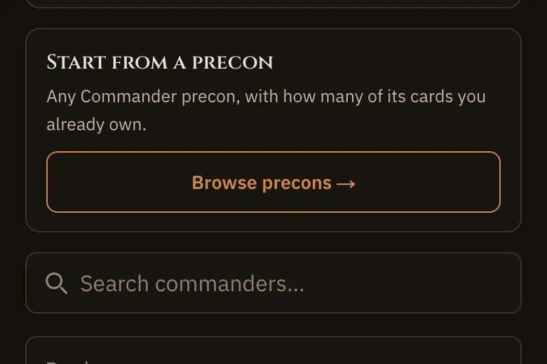
Precons
Any Commander precon, with how many of its cards you already own.
Show me ›Browse precons→
Engineering’s readiness audit found two Tools cards no section lists, and nine screens whose ? has no section to scroll to. Both tools stay, each placed on the screen that already shows its control. Every ? still lands on a page section, never the index: the section that answers that screen’s question, with the item that answers it lit (the label or rule gets the halo, no New tag). How it works and the one-time About sheet retire, as Hugh ruled.
| Screen | Route | Lands on | Lit |
|---|---|---|---|
| Card details | ?card= on a Collection list | Collection › Cards | label: The key (desktop only; the phone’s ? is under the card) |
| Sets | /collection/sets, a set’s page | Collection › Cards | label: the tabs |
| Proxies | /collection/proxies | Shopping › A deck’s Shopping | rule: proxy |
| History | /collection/history | Collection › Upload a file | rule: Replace and Add |
| Wishlist | /collection/wishlist | Collection › Cards | label: the tabs |
| New deck | /decks/new, /decks/import | Decks › Your decks | label: New deck |
| New deck | /decks/precons/** | Decks › Your decks | label: Precons |
| New deck | /commanders/choose | Commanders › For you | label: For you, Discover and Help me choose |
| Settings | /settings | Home › What’s new | label: The top story |
| Credits | /credits | Decks › Analysis | rule: credits |
| Account | the account menu | no landing | the menu never names a screen (screen-for-path); a ? pressed with it open answers for the page under it |
Every deck, with what it needs next.
 1234
1234New deck starts from a commander. “Import a deck” brings in a list you already play.
Precons lists every Commander precon, with how many of its cards you already own. Start a deck from one just as it comes in the box.

Any Commander precon, with how many of its cards you already own.
A deck’s status says what to do next. “To buy” is a full deck you can’t sleeve yet, and “Draft” is one you’ve never committed.
Stats puts every deck side by side: when each was last played, and how it went.

Every deck side by side: when each last played, and how it went.
A new label, 2, on the shipped Precons button, and the Precons tool card joins Your decks’ Try it. Drawn as its Show me lands: label lit, card right under it.
Where your deck sits, and the tools that tune it.
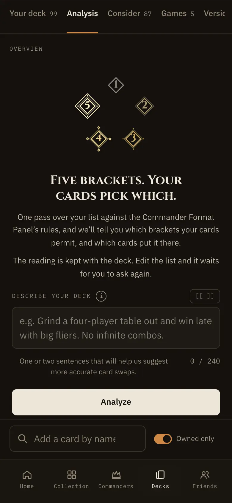
13Analyze reads your list against the Commander Format Panel’s bracket rules and shows where your cards sit. Reading a bracket is free.
What is in this deck counts Game Changers, mass land denial, extra turns, two-card infinites and tutors. Each count opens to show its cards.not in today’s capture
Describe your deck in a sentence or two. Suggested changes uses it to understand what the deck is for.
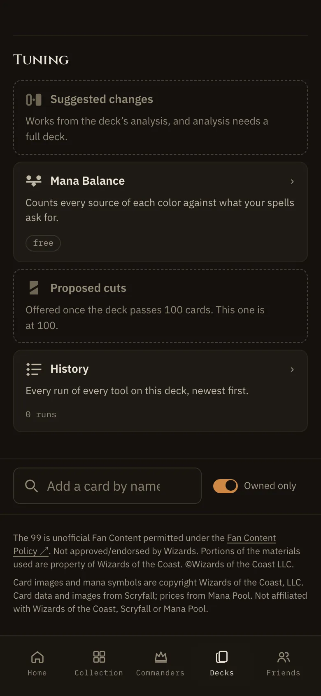
456Suggested changes offers up to five cards to add and five to cut, each with its reason. Each run uses a credit.
Mana Balance counts every source of each color against what your spells ask for. It’s free to run.
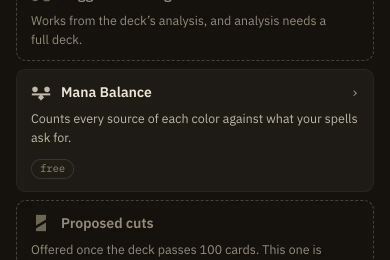
Counts every source of each color against what your spells ask for.
Proposed cuts counts where a deck over 100 runs long, for free. “Look deeper” names the cards for a credit.
At either end of the scale, brackets come down to intent, so your cards can fit two. A Squirrel deck with no Game Changers passes at both Exhibition and Core. Only you know which, so you pick.
Reading a bracket is free. Anything written just for you uses a credit: an Overview, a Suggested changes run, a Look deeper. A run that comes back empty-handed gives the credit back.
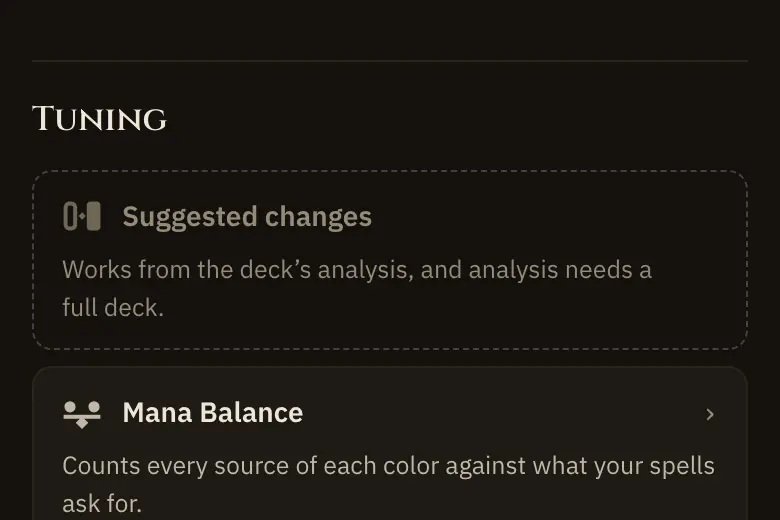
Up to five swaps, read from your games, your notes and the list.
A new label on the Tuning shot, where the Mana Balance tile already sits, between Suggested changes and Proposed cuts. Its card joins Analysis’ Try it, the third.
Every deck, with what it needs next.
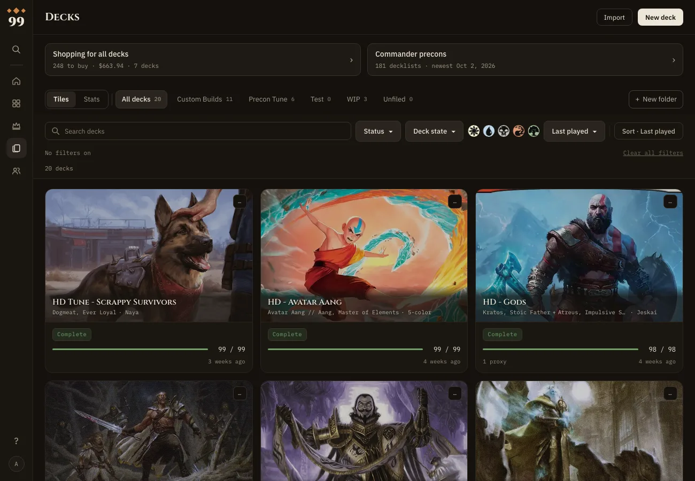
1234New deck starts from a commander. “Import a deck” brings in a list you already play.
Precons lists every Commander precon, with how many of its cards you already own. Start a deck from one just as it comes in the box.
A deck’s status says what to do next. “To buy” is a full deck you can’t sleeve yet, and “Draft” is one you’ve never committed.
Stats puts every deck side by side: when each was last played, and how it went.
Every deck side by side: when each last played, and how it went.
Any Commander precon, with how many of its cards you already own.
The “Commander precons” box beside Shopping for all decks. Try it is now Stats for your decks and Precons.
Where your deck sits, and the tools that tune it.
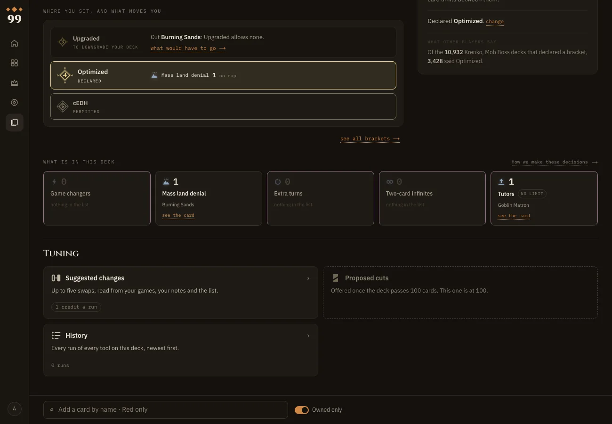
1234Analyze reads your list against the Commander Format Panel’s bracket rules and shows where your cards sit. Reading a bracket is free.
What is in this deck counts Game Changers, mass land denial, extra turns, two-card infinites and tutors. Each count opens to show its cards.
Suggested changes offers up to five cards to add and five to cut, each with its reason. Each run uses a credit.
Proposed cuts counts where a deck over 100 runs long, for free. “Look deeper” names the cards for a credit.
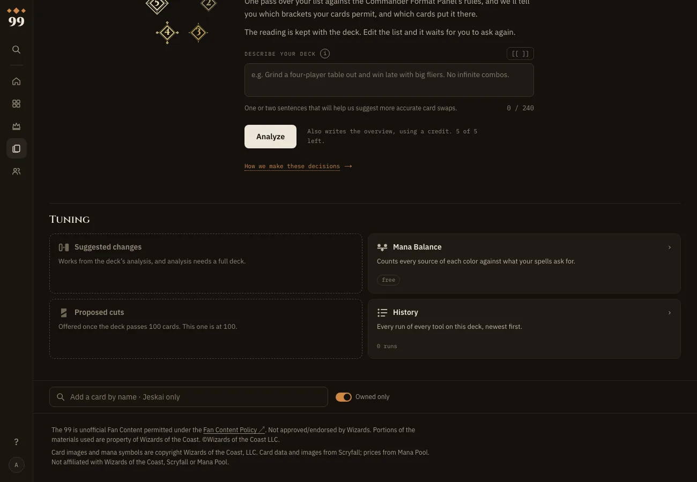
56Mana Balance counts every source of each color against what your spells ask for. It’s free to run.
Describe your deck in a sentence or two. Suggested changes uses it to understand what the deck is for.
At either end of the scale, brackets come down to intent, so your cards can fit two. A Squirrel deck with no Game Changers passes at both Exhibition and Core. Only you know which, so you pick.
Reading a bracket is free. Anything written just for you uses a credit: an Overview, a Suggested changes run, a Look deeper. A run that comes back empty-handed gives the credit back.
Up to five swaps, read from your games, your notes and the list.
Counts where a deck runs long. A deeper look names the cuts.
Counts every source of each color against what your spells ask for.
Its pin sits on the second Analysis shot, beside Describe, where the 1300 Tuning grid shows the tile. Try it becomes a full row of three.
/collection/wishlist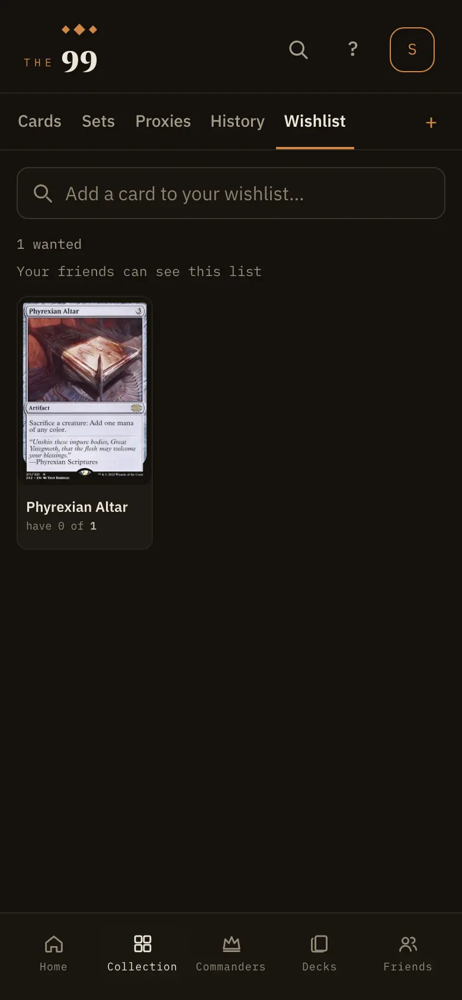
Everything you own, card by card.
 1234
1234Cards, Sets, Proxies, History and Wishlist are your Collection’s tabs.
The + adds cards by name, by scanning them, or from a file.
The key explains every mark a card can carry, from Game Changer to In use.
“none free” means committed decks hold every copy you own.
A copy you own can live in only one committed deck at a time. The first deck to commit gets it, and drafts wait behind committed decks. Own one Sol Ring and run it in three decks, and two of them show it short.
Changing your Collection never changes a decklist. A deck that loses its copy keeps the card, shows it short and puts it on its shopping list.
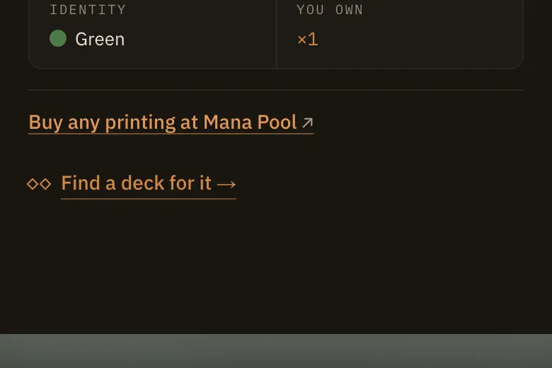
Reads your decks for the one a card you own fits best.
Collection, at Cards, with the tabs label lit: Wishlist is one of the five. Sets lands the same way.
/collection/proxies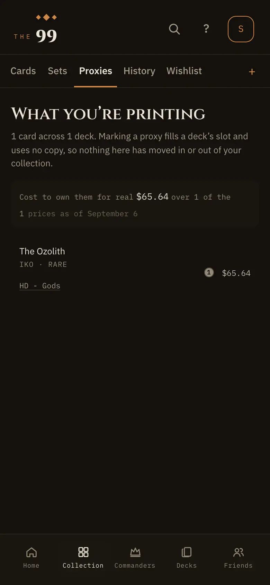
What one deck still needs.
 12345
12345The total is what this deck still needs at Mana Pool. “Buy these at Mana Pool” opens a cart with them.
Marking cards over $10 sets this deck’s price limit. Cards over it get cheaper stand-ins.
⇄ opens cheaper stand-ins for a card over your limit.
The friends mark means a friend can spare that card. Press it to see who, and ask for one. An ask with no answer lapses after 14 days.
buy shows the price. Press it when you’ve bought the card, and it goes into your Collection.
A proxy comes off the shopping list and uses no copy. A token you mark “I have one” leaves every deck’s list, since any printing counts.

For a card over your price limit: cards that do the same job for less.
Shopping, at a deck’s Shopping, with the proxy rule lit: what a proxy does to a deck and its list is the question this screen raises.
/collection/history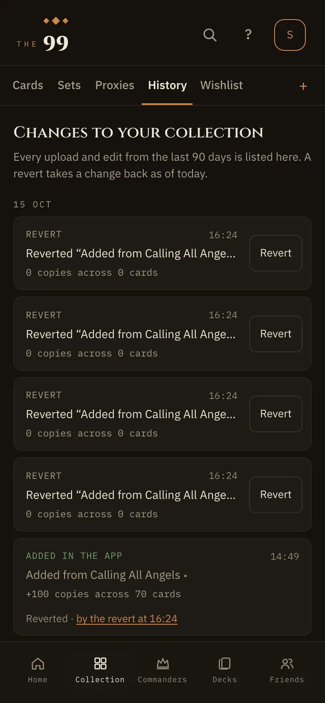
Bring in an export from another app.
 1
1Drop in a CSV from ManaBox, Moxfield, Archidekt or Deckbox, or paste a list. Nothing changes until you confirm.
With Replace, any card that isn’t in the file leaves your Collection, and changes you made in the app are overwritten. With Add, your quantities go up and nothing leaves.

Merges a new file with what you changed here, card by card, and asks only where both moved.
Collection, at Upload a file, with Replace and Add lit: History lists what each upload did, and that rule says why.
/decks/new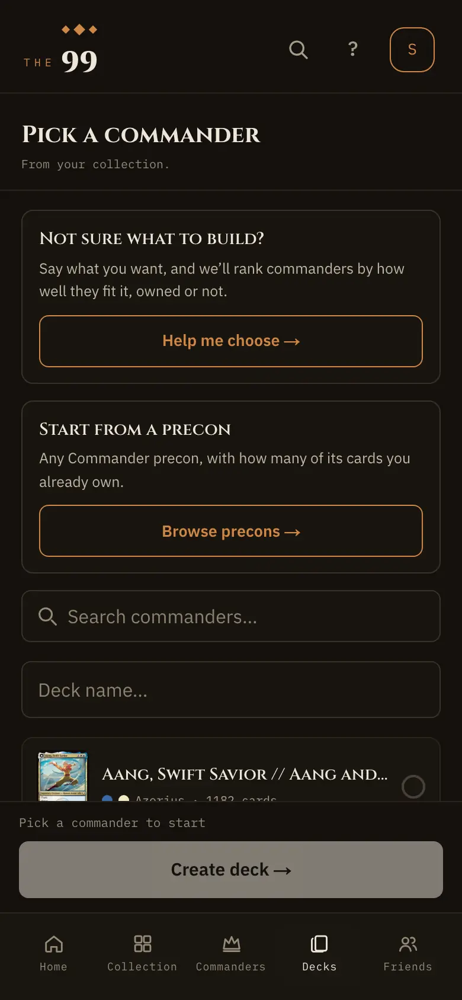
Every deck, with what it needs next.
1234New deck starts from a commander. “Import a deck” brings in a list you already play.
Precons lists every Commander precon, with how many of its cards you already own. Start a deck from one just as it comes in the box.
A deck’s status says what to do next. “To buy” is a full deck you can’t sleeve yet, and “Draft” is one you’ve never committed.
Stats puts every deck side by side: when each was last played, and how it went.
Every deck side by side: when each last played, and how it went.
Decks, at Your decks, with New deck lit. From /decks/precons the Precons label is lit instead; /decks/import lights New deck too.
/settings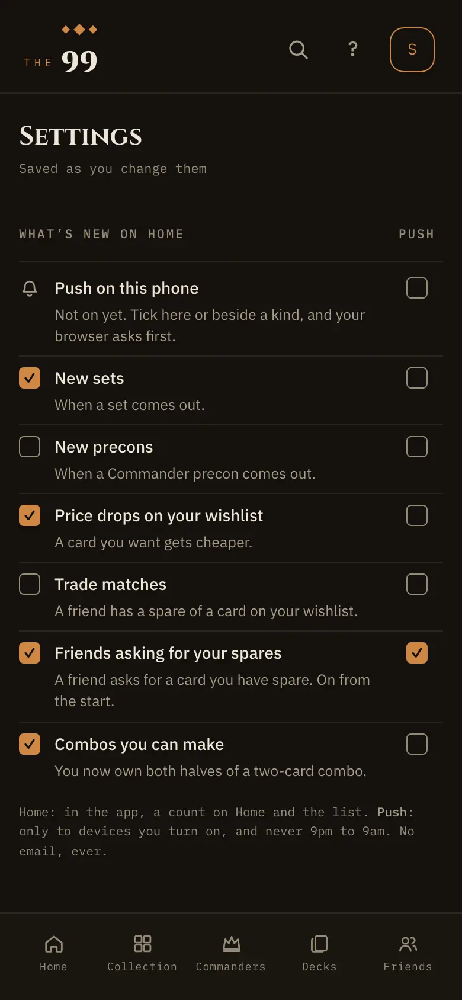
News for you, newest first.
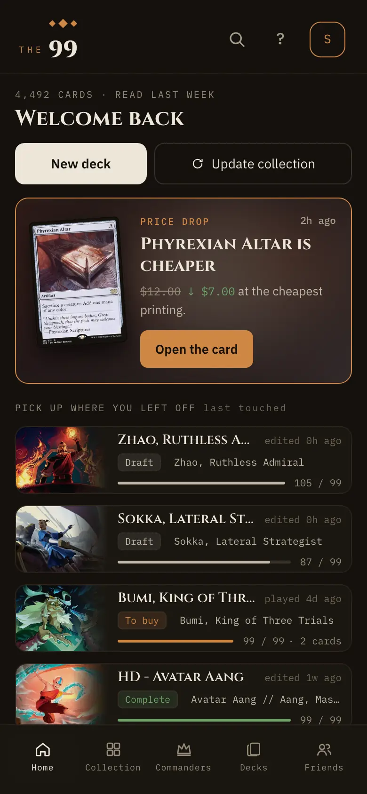
1The top story is the newest thing for you: a set, a precon, a price drop on your wishlist, or a combo you can now make.
Home, at What’s new, with the top story lit: Settings is where you pick what reaches it, and push.
/credits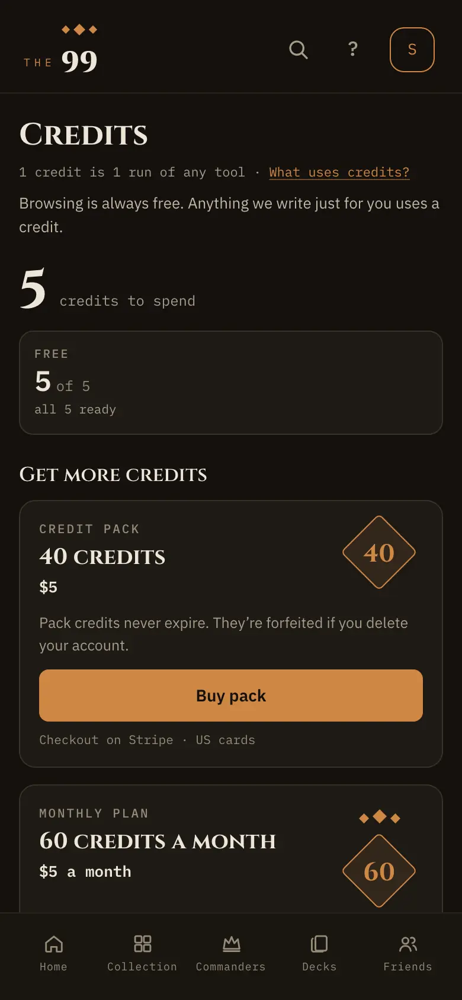
Where your deck sits, and the tools that tune it.
Analyze reads your list against the Commander Format Panel’s bracket rules and shows where your cards sit. Reading a bracket is free.
What is in this deck counts Game Changers, mass land denial, extra turns, two-card infinites and tutors. Each count opens to show its cards.not in today’s capture
Describe your deck in a sentence or two. Suggested changes uses it to understand what the deck is for.
Suggested changes offers up to five cards to add and five to cut, each with its reason. Each run uses a credit.
Mana Balance counts every source of each color against what your spells ask for. It’s free to run.
Proposed cuts counts where a deck over 100 runs long, for free. “Look deeper” names the cards for a credit.
Reading a bracket is free. Anything written just for you uses a credit: an Overview, a Suggested changes run, a Look deeper. A run that comes back empty-handed gives the credit back.
Up to five swaps, read from your games, your notes and the list.
Decks, at Analysis, with the credits rule lit. The same place engineering already points the old Reference link to.
Everything you own, card by card.
 1234
1234Cards, Sets, Proxies, History and Wishlist are your Collection’s tabs.
The + adds cards by name, by scanning them, or from a file.
The key explains every mark a card can carry, from Game Changer to In use.
“none free” means committed decks hold every copy you own.
A copy you own can live in only one committed deck at a time. The first deck to commit gets it, and drafts wait behind committed decks. Own one Sol Ring and run it in three decks, and two of them show it short.
Changing your Collection never changes a decklist. A deck that loses its copy keeps the card, shows it short and puts it on its shopping list.
Reads your decks for the one a card you own fits best.
Cards you want that no deck is asking for. A card leaves once you have enough.
Only at 1280 and up: the rail’s ? is lifted over card details there. At 390 card details covers the header’s ?, so a phone never asks. Lands on Cards with the key lit, the marks a card carries; ‹ goes back to the open card.
Where your deck sits, and the tools that tune it.
Analyze reads your list against the Commander Format Panel’s bracket rules and shows where your cards sit. Reading a bracket is free.
What is in this deck counts Game Changers, mass land denial, extra turns, two-card infinites and tutors. Each count opens to show its cards.
Suggested changes offers up to five cards to add and five to cut, each with its reason. Each run uses a credit.
Proposed cuts counts where a deck over 100 runs long, for free. “Look deeper” names the cards for a credit.
Mana Balance counts every source of each color against what your spells ask for. It’s free to run.
Describe your deck in a sentence or two. Suggested changes uses it to understand what the deck is for.
At either end of the scale, brackets come down to intent, so your cards can fit two. A Squirrel deck with no Game Changers passes at both Exhibition and Core. Only you know which, so you pick.
Reading a bracket is free. Anything written just for you uses a credit: an Overview, a Suggested changes run, a Look deeper. A run that comes back empty-handed gives the credit back.
Up to five swaps, read from your games, your notes and the list.
Counts where a deck runs long. A deeper look names the cuts.
Counts every source of each color against what your spells ask for.
The same landing at 1300: Analysis, its credits rule lit in Good to know.